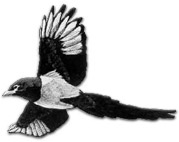

中国語風に発音すると、チュエチャホエ 。
   
鵲は「かささぎ」を表すので、 は必須であるが、 は必須であるが、  の組み合わせは の組み合わせは  、あるいは という組み合わせでも良い。 、あるいは という組み合わせでも良い。

日本では佐賀県や筑後地域に生息する天然記念物だとか。Ｊリーグのサガン鳥栖のマスコットのにもなっている。“勝ち勝ち” と鳴くので、佐賀では”カチガラス” と呼ばれいるという。
この“鵲橋会”、直訳すると「鵲の橋で会う」という意味、ってこれじゃあ、なんのこったか分かんねぇ...（^-^；
これは中国の七夕民話にちなんだ名称 and
アガリ役。そこで のうちの２種で７月７日、 で鵲（かささぎ）を表す。
その七夕民話とは、こんなの。
昔、南陽城西牛家庄に一人の若者がいた。父母は早く死んだので兄嫁の家に住んでいた。牛の世話をしながら暮らしていたので牛郎（中国語風の発音だと、ニューラン）と呼ばれた。しかし兄嫁はいつも牛郎を追い払いたいと思っていた。そこである日、９頭の牛を与えて10頭になったら戻ってくるように言いつけた。
牛郎は牛を連れて山に入ったが、牛が繁殖して増えるなどいつのことか分からない。悲しんでいると一人の髭や髪が真っ白な老人が現れた。事情を聞くと老人は「心配することはない。伏牛山に１頭の病気の老牛がいる。その病気を治し、連れ帰れば済むことじゃ」と言った。
そこで牛郎はさっそく伏牛山にでかけ、病気の老牛を見つけた。すると老牛いわく、「じつは自分は天上界の灰牛大仙です。天の掟を破ったために下界に落とされました。そのときに足を挫き動けなくなりました。この傷は百花の露水で、１ヶ月洗えば治ります」
牛郎は昼間は花を取ってきて露水で傷を治し、夜は老牛のそばで一緒に寝るなどして１ヶ月世話をした。やがて老牛の傷が治ったので喜んで家に帰った。
早く帰った牛郎をみて、兄嫁はがっかり。それからも相変わらず牛郎に危害を加えようとしたが、その度に老牛によって助けられた。怒った兄嫁は、ついに問答無用と牛郎を家から追い出した。そのとき老牛だけがついて来た。
老牛と暮らしていたある日、天女が何人か下界に遊びに来て水浴しているのを見つけた。牛郎は老牛の助けで天女の１人、織女と親しくなった。その後、織女はこっそり下界に下りて来て牛郎と一緒になった。そして天上から持って来た蚕を皆んなに分け与え、絹織物の作り方を教えた。
（「牛郎がこっそり着物を隠したので、天上に帰れなくなった織女が仕方なく一緒になった」との別話もある）
二人は男の子と女の子にも恵まれ、幸福に過していた。しかしこれを天帝が知り、王母娘娘を使わして織女を連れ帰ってしまった。天上に行くことが出来ない牛郎が悲しんでいると、老牛が「自分の皮で靴を作って履けば天上に行くことが出来る」と云った（「皮で服を作って着れば天上に行くことが出来る」と云ったとの別話もある）。
老牛の死んだあと、牛革の靴を作って天上へ向かった。もう少しで織女に会えるという時、王母娘娘が簪（かんざし）を抜いて一振りすると怒涛逆巻く天の川が出現した。そのため二人は両岸に別れ別れになってしまった。
二人が悲しんでいるのを見た喜鵲（xiqueカササギ）が感動し、何千何万の喜鵲が集まり鵲橋を作った。そこで二人は会うことができた。これを見た王母娘娘は、毎年七月七日だけ会うことを許した。
ということで、中国ではジューン ブライドよりジュライ ブライドの方が圧倒的に多いらしい.....ってホントか？
|